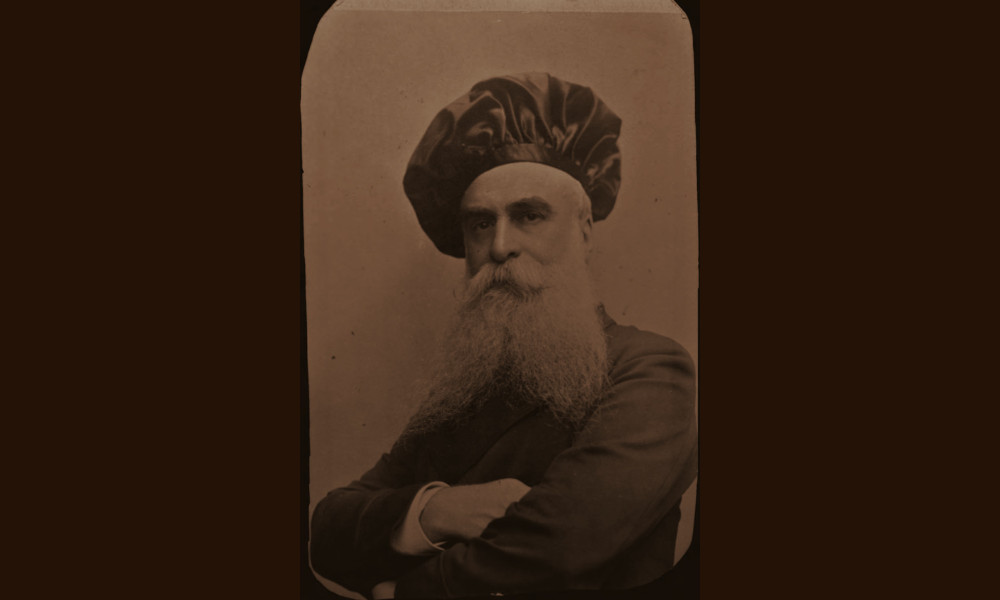

Sambon
Milano, Roma e Firenze, entità attiva dal 1885 al 1905

- PERSONA
- Giulio Sambon, 1837–1921, antiquario
- INSEGNA
- Impresa di vendita in Italia Giulio Sambon
- IN CATALOGO
- Opere transitate, catalogo della Fondazione Zeri →
Giulio Nino Sambon (1837-1921) nacque a Napoli nel 1837. Collezionista e appassionato di numismatica, da Napoli si trasferì a Roma allo scadere degli anni Settanta del XIX secolo quando iniziò a collaborare in qualità di esperto con la "Società per le vendite in Italia Raffaele Dura & C.". La casa di vendite, fondata nel 1877, aveva sede a Roma in Palazzo Poli, a Milano in via Santa Redegonda 10 e a Firenze in via dei Martelli 2. Sambon la rilevò nel 1882 e le diede il nome di "Impresa di vendita in Italia Giulio Sambon". Con la nuova ragione sociale, la casa d'asta trovò altre sedi: a Milano fu in Corso Vittorio Emanuele 37 dal 1885, a Firenze in via Martelli 4 dal 1887, a Roma in via della Croce nel 1886 e l'anno seguente in via Condotti 44, infine a Napoli in via Gennaro Serra 24 dal 1886.
L'attività di Giulio Sambon tra il 1883 e il 1898 si può ripercorrere attraverso la pubblicazione dei cataloghi d'asta che documentano alcune vendite molto importanti, come quelle, a Milano, del noto antiquario Giuseppe Baslini (1817-1887), tenutasi nel 1888 o quella nel 1899 di Giuseppe Bertini, consigliere negli acquisti di Gian Giacomo Poldi Pezzoli. Nel 1903, a Milano, Sambon fu a capo di una delegazione di antiquari milanesi che, in maniera autonoma rispetto a quella fiorentina poi firmataria della lettera inviata in Senato, criticava aspramente la legge Nasi sul diritto di prelazione statale e sul divieto di esportazione dei beni sottoposti a tutela.
Abbandonata l'Italia tra il 1904 e il 1908, il mercante si trasferì a Parigi. Qui il figlio, Arthur Sambon (1867-1947) aprì una casa di vendite di grande successo, collaborando strettamente con i colleghi di origini napoletane Ercole e Cesare Canessa , attivi a Parigi e New York. Negli anni Dieci e Venti del Novecento, Giulio si dedicò maggiormente allo studio della numismatica e archeologia. Morì a Londra il 6 maggio 1921.
Bibliografia essenziale
- Bertelli, B. (2011-2012), Commercio antiquario a Firenze nel primo trentennio dopo l’Unità d’Italia: protagonisti, transazioni e circolazione delle opere d’arte, tesi di Dottorato, Università degli Studi di Udine
- Lambrugo, C. (2018), Giulio Sambon e la sua collezione: dal commercio antiquario alla raccolta pubblica, Milano, Johan & Levi Editore, pp. 75-82, pp. 233-239
- Napodano, L. (2018), Giulio Sambon mercante d'arte, in «Acme», vol. 17, 2, pp. 131-165